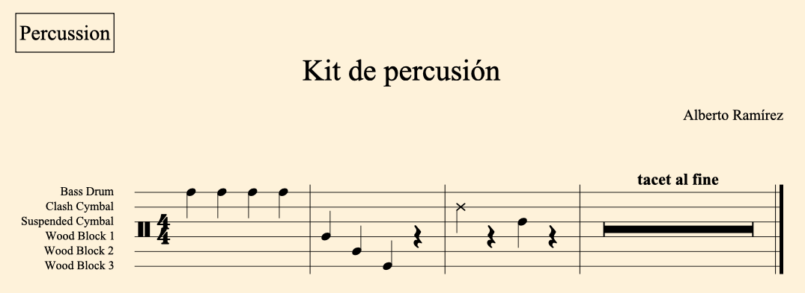

Crear Kit de Percusión
Añadimos intérprete y añadimos un nuevo Kit.
Por ejemplo: Bombo, Platos de concierto, Plato suspendido, Temple blocks.
Visualización (Pentagrama/Rejilla/Instrumentos de una sola línea)
Opción de visualización: Pentagrama de cinco líneas, rejilla o 1 línea.
Cualquier cambio se debe hacer seleccionando la maquetación deseada. Marcaremos en la parte derecha Maquetaciones/Partitura completa. (Tantas veces como kits de instrumento tengamos)
También debemos cambiar la visualización de la parte. Tal vez, en algunos casos nos venga bien el tipo de visualización de rejilla.

Mostrar texto en Pentagrama
El nombre de los instrumentos se puede editar desde la propia configuración del Kit.
Para mostrar el texto en pentagrama de percusión basta con seleccionar desde el pentagrama en modo composición: Percusión/leyenda para instrumentos sonoros
Recomendable crear un atajo:
Pictogramas de percusión
Las fuentes que soportan pictogramas son Bravura y FinaleMaestro.
1. Creamos un texto de sistema. Con botón derecho activamos la opción: insertar texto de música...
2. Abrimos el desplegable y buscamos la biblioteca deseada. En este caso es Drums Pictograms.
3. Seleccionamos el pictograma deseado, lo insertamos y copiamos.
4. Lo llevamos a la edición de texto en el kit de percusión e insertamos. Debemos cambiar la fuente para poder visualizarlo. La fuente finale maestro text no reconoce pictogramas. Finale Maestro, sí.
5. Biblioteca/Estilos de párrafo/Leyenda de percusión cambiamos Finale Maestro Text por Finale maestro.